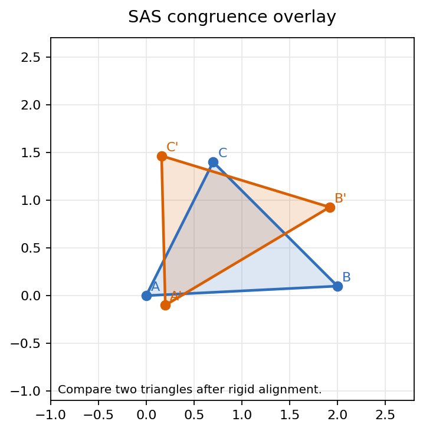
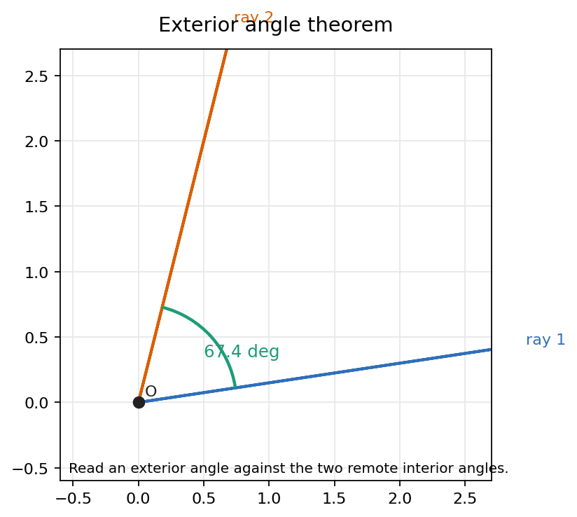
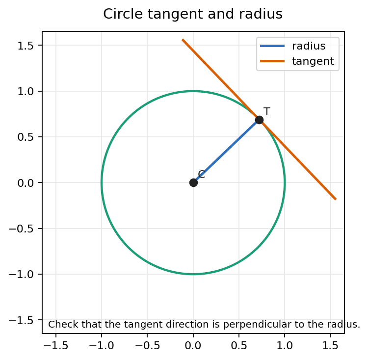
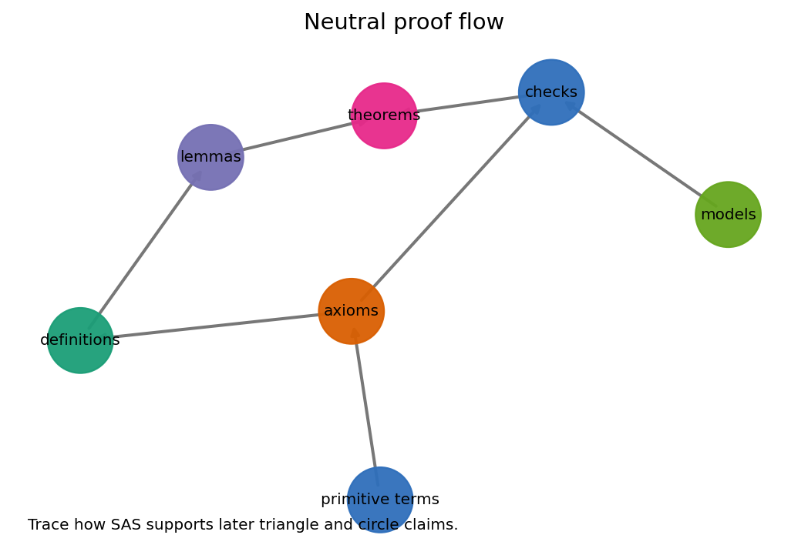

Triangle congruence, exterior angles, right-triangle logic, and tangent tests before any parallel postulate is selected.
Sides and included angle determine a triangle up to congruence.
ASA, SSS-style comparisons, and isosceles facts become reusable lemmas.
Outside angles dominate remote interior angles and control side order.
Hypotenuse-leg and distance arguments turn perpendiculars into tools.
Equal radii, chords, and tangent-radius perpendicularity connect circle and line geometry.
Each argument must use only neutral axioms and earlier chapter tools.
Neutral geometry is the common core of plane geometry developed before adopting a Euclidean or hyperbolic parallel axiom.

Notebook visual target: compare two triangles after rigid alignment.
\(AB \cong A'B',\; AC \cong A'C',\; \angle BAC \cong \angle B'A'C'\)
Then every remaining corresponding side and angle agrees.

Notebook visual target: read an exterior angle against the two remote interior angles.
Extend one side of a triangle. The exterior angle formed is greater than each nonadjacent interior angle.
\(m\angle BCD > m\angle A,\quad m\angle BCD > m\angle B\)
Do not replace this with the Euclidean angle-sum formula. The inequality is neutral and must be proved before angle sums become available in later chapters.
If one side of a triangle is longer, the angle facing it is larger.
The converse comparison follows by contradiction and the exterior-angle theorem.
A broken path through a third point cannot beat the direct segment.
For right triangles, one right angle removes rotational ambiguity. Matching the hypotenuse and one leg forces the remaining leg and acute angles to match.
A point on the perpendicular bisector of segment \(AB\) is equidistant from \(A\) and \(B\). Conversely, a point equidistant from \(A\) and \(B\) lies on that bisector.

Notebook visual target: check that the tangent direction is perpendicular to the radius.
If line \(\ell\) touches circle center \(C\) at \(T\), then \(CT \perp \ell\). Conversely, a line through \(T\) perpendicular to \(CT\) is tangent at \(T\).
Every other point on the line must be farther from the center than \(T\), so it cannot lie on the same circle.
Do not assume a tangent line is obvious from a picture. The proof must establish single-point contact using distance and perpendicularity.

Notebook visual target: trace how SAS supports later triangle and circle claims.
For any proposed theorem, list the primitive definitions, axioms, lemmas, and model checks it depends on.
They do not replace proof. They make geometric claims inspectable, catch blank artifacts, and force each diagram to carry a measurable invariant.
A numeric example cannot prove a neutral theorem. It is a laboratory for finding the right synthetic dependency.
Given two marked triangles, state the exact congruence gate and every transported conclusion.
Prove a side-order statement without invoking a Euclidean angle sum.
Show a candidate line touches a circle once by radius perpendicularity and distance comparison.
Neutral geometry is not weak geometry. It is the portable core: congruence moves local data, exterior angles create inequalities, right triangles organize perpendiculars, and tangent proofs convert circle pictures into distance arguments.